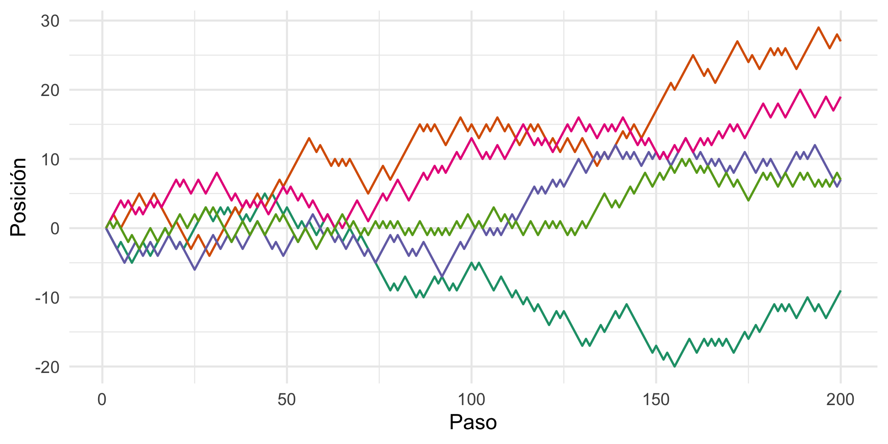
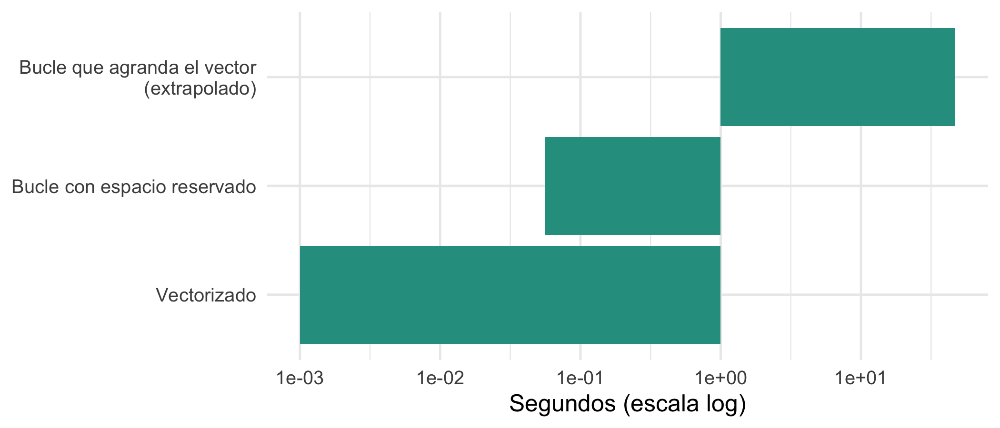

library(ggplot2)
library(dplyr)
set.seed(2026)Programación en R: control de flujo, bucles y funciones
Minicurso de R · Módulo 1
R
programación
funciones
bucles
Condicionales, bucles, la familia apply y funciones propias, con simulaciones y una comparación de velocidad.
Objetivos de aprendizaje
Al terminar este cuaderno podrás:
- Tomar decisiones en el código con
if,else,ifelse()yswitch(). - Repetir tareas con
for,whileyrepeat. - Reemplazar bucles por la familia
apply(sapply,lapply,vapply,Map). - Escribir funciones propias con argumentos por defecto y validaciones.
- Elegir entre bucle y vectorización según legibilidad y velocidad.
1. Condicionales
Una estructura de control decide qué código se ejecuta. La más común es if/else if/else, que evalúa una condición lógica de longitud 1:
clasificar_lluvia <- function(mm) {
if (mm < 1) {
"sin lluvia"
} else if (mm < 10) {
"lluvia ligera"
} else if (mm < 50) {
"lluvia moderada"
} else {
"lluvia intensa"
}
}
clasificar_lluvia(0)[1] "sin lluvia"clasificar_lluvia(23)[1] "lluvia moderada"clasificar_lluvia(80)[1] "lluvia intensa"Pero if no está vectorizado: si le das un vector de condiciones dará un error. Para vectores se usa ifelse(), o mejor dplyr::case_when() cuando hay varias categorías:
lluvia <- c(0, 3, 12, 55, 8, 0.5, 120)
ifelse(lluvia > 10, "alta", "baja")[1] "baja" "baja" "alta" "alta" "baja" "baja" "alta"case_when(
lluvia < 1 ~ "sin lluvia",
lluvia < 10 ~ "ligera",
lluvia < 50 ~ "moderada",
TRUE ~ "intensa"
)[1] "sin lluvia" "ligera" "moderada" "intensa" "ligera"
[6] "sin lluvia" "intensa" switch() elige entre opciones nombradas y es útil dentro de funciones:
resumen <- function(x, tipo = c("media", "mediana", "maximo")) {
tipo <- match.arg(tipo)
switch(tipo,
media = mean(x),
mediana = median(x),
maximo = max(x))
}
resumen(lluvia, "mediana")[1] 8resumen(lluvia) # usa la primera opción por defecto[1] 28.357142. Bucles
Un bucle repite un bloque de código. for recorre una secuencia, while repite mientras se cumpla una condición y repeat repite hasta un break explícito.
for (i in 1:3) {
cat("Iteración", i, "\n")
}Iteración 1
Iteración 2
Iteración 3 paises <- c("Colombia", "Perú", "Chile")
for (p in paises) {
cat("Hola,", p, "\n")
}Hola, Colombia
Hola, Perú
Hola, Chile # ¿Cuántos años tarda una población de 1000 en superar 5000 si crece 3% anual?
poblacion <- 1000
anios <- 0
while (poblacion < 5000) {
poblacion <- poblacion * 1.03
anios <- anios + 1
}
anios[1] 55
TipConsejo: reserva el espacio antes del bucle
Cuando llenes un vector dentro de un bucle, créalo antes con su tamaño final (resultado <- numeric(n)). Agrandar un vector en cada iteración (resultado <- c(resultado, nuevo)) es muy lento.
Ejemplo: caminata aleatoria
Una caminata aleatoria suma pasos de +1 o -1 elegidos al azar. Es un modelo básico de difusión y de series de tiempo.
caminata <- function(n_pasos) {
posicion <- numeric(n_pasos) # se reserva el espacio
for (t in 2:n_pasos) {
paso <- sample(c(-1, 1), 1)
posicion[t] <- posicion[t - 1] + paso
}
posicion
}
trayectorias <- lapply(1:5, function(k) {
data.frame(paso = 1:200, posicion = caminata(200), id = factor(k))
}) |> bind_rows()
ggplot(trayectorias, aes(paso, posicion, colour = id)) +
geom_line(linewidth = 0.6) +
scale_colour_brewer(palette = "Dark2", guide = "none") +
labs(x = "Paso", y = "Posición") +
theme_minimal(base_size = 12)
3. La familia apply
Escribir un for para aplicar una función a cada elemento es tan común que R ofrece atajos que devuelven el resultado directamente:
| Función | Devuelve | Cuándo usarla |
|---|---|---|
lapply(x, f) |
lista | Siempre funciona |
sapply(x, f) |
vector o matriz | Simplifica el resultado (a veces de forma inesperada) |
vapply(x, f, FUN.VALUE) |
vector | Como sapply pero declarando el tipo de salida (más seguro) |
Map(f, x, y) |
lista | Cuando f recibe varios argumentos en paralelo |
apply(m, MARGIN, f) |
vector | Filas (1) o columnas (2) de una matriz |
lista_notas <- list(ana = c(4.5, 3.8, 4.2), beto = c(3.0, 3.5), carla = c(5.0, 4.8, 4.9, 4.7))
sapply(lista_notas, mean) ana beto carla
4.166667 3.250000 4.850000 vapply(lista_notas, length, FUN.VALUE = integer(1)) ana beto carla
3 2 4 lapply(lista_notas, range)$ana
[1] 3.8 4.5
$beto
[1] 3.0 3.5
$carla
[1] 4.7 5.0m <- matrix(c(2, 4, 6, 8, 10, 12), nrow = 2)
apply(m, 1, sum) # suma por fila[1] 18 24apply(m, 2, sum) # suma por columna[1] 6 14 22Para agrupar y resumir datos tabulares, dplyr es más legible que tapply() o aggregate():
# Con base R
tapply(iris$Sepal.Length, iris$Species, mean) setosa versicolor virginica
5.006 5.936 6.588 # Con dplyr
iris |>
group_by(Species) |>
summarise(media = mean(Sepal.Length), desviacion = sd(Sepal.Length))# A tibble: 3 × 3
Species media desviacion
<fct> <dbl> <dbl>
1 setosa 5.01 0.352
2 versicolor 5.94 0.516
3 virginica 6.59 0.6364. Funciones propias
Si copias el mismo código más de dos veces, conviene escribir una función. Su estructura es:
nombre <- function(argumento1, argumento2 = valor_por_defecto) {
# cuerpo
resultado # lo último que se evalúa es lo que se devuelve
}Ejemplo: el coeficiente de variación (\(CV = s/\bar{x}\)) con validaciones y manejo de faltantes:
coef_variacion <- function(x, na.rm = TRUE, porcentaje = FALSE) {
stopifnot(is.numeric(x))
cv <- sd(x, na.rm = na.rm) / mean(x, na.rm = na.rm)
if (porcentaje) cv * 100 else cv
}
coef_variacion(c(10, 12, 9, 11, NA))[1] 0.1229519coef_variacion(c(10, 12, 9, 11), porcentaje = TRUE)[1] 12.29519Una función puede devolver varios valores dentro de una lista y aceptar ... para pasar argumentos a otras funciones:
resumen_completo <- function(x, ...) {
list(n = length(x),
media = mean(x, ...),
ic95 = mean(x, ...) + c(-1, 1) * 1.96 * sd(x, ...) / sqrt(length(x)))
}
resumen_completo(c(10, 12, 9, 11, 13, 8), na.rm = TRUE)$n
[1] 6
$media
[1] 10.5
$ic95
[1] 9.003025 11.9969755. ¿Bucle o vectorización?
Los bucles de R son correctos pero suelen ser más lentos que las operaciones vectorizadas. Comparemos tres formas de calcular el cuadrado de un millón de números:
n <- 1e6
x <- runif(n)
t_bucle_malo <- system.time({ # agranda el vector en cada paso (evitar)
r <- c(); for (i in 1:5e4) r <- c(r, x[i]^2)
})["elapsed"] * (n / 5e4) # se extrapola a n
t_bucle <- system.time({ # reserva el espacio
r <- numeric(n); for (i in seq_len(n)) r[i] <- x[i]^2
})["elapsed"]
t_vector <- system.time(r <- x^2)["elapsed"]
tibble(metodo = c("Bucle que agranda el vector\n(extrapolado)", "Bucle con espacio reservado", "Vectorizado"),
segundos = c(t_bucle_malo, t_bucle, t_vector)) |>
ggplot(aes(reorder(metodo, segundos), segundos)) +
geom_col(fill = "#2a9d8f") +
scale_y_log10() +
coord_flip() +
labs(x = NULL, y = "Segundos (escala log)") +
theme_minimal(base_size = 12)
La regla práctica es: primero claridad, luego velocidad. Usa operaciones vectorizadas siempre que existan; usa for cuando cada paso depende del anterior (como en la caminata aleatoria) y usa sapply/lapply para repetir una función sobre elementos independientes.
Ejercicios
- Condicional. Escribe una función
signo(x)que devuelva"positivo","negativo"o"cero". Aplícala ac(-3, 0, 5)consapply(). - Bucle. Usa un
forpara calcular el factorial de 10 y compáralo confactorial(10). - Simulación. Simula 1000 veces el lanzamiento de dos dados y estima la probabilidad de que sumen 7 (el valor teórico es 1/6).
- Función. Escribe
estandarizar(x)que devuelva \((x - \bar{x})/s\). ¿Qué media y desviación tiene el resultado?
NoteSoluciones sugeridas
signo <- function(x) {
if (x > 0) "positivo" else if (x < 0) "negativo" else "cero"
}
sapply(c(-3, 0, 5), signo)[1] "negativo" "cero" "positivo"f <- 1
for (i in 1:10) f <- f * i
c(f, factorial(10))[1] 3628800 3628800lanzamientos <- replicate(1000, sum(sample(1:6, 2, replace = TRUE)))
mean(lanzamientos == 7)[1] 0.158estandarizar <- function(x) (x - mean(x)) / sd(x)
z <- estandarizar(c(4, 8, 6, 5, 7))
c(media = mean(z), desviacion = sd(z)) media desviacion
0 1 Para profundizar
- Wickham, H. (2019). Advanced R (2.ª ed.): capítulos “Control flow”, “Functionals” y “Functions”. adv-r.hadley.nz.
- Wickham, H. y Grolemund, G. (2017). R for Data Science: capítulos “Functions” e “Iteration”. r4ds.hadley.nz.
- Paquete
purrr, alternativa moderna a la familiaapply.